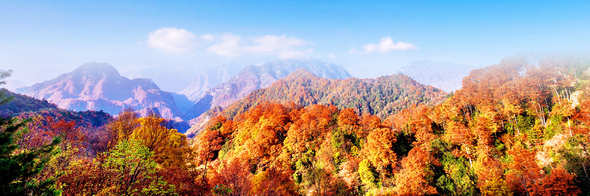

光雾山


简介: 光雾山，地处桃园南，顶峰三尖二缺，平缓变化，远观似卧佛，因常年云雾绕而得名，山上气候变化无常，游人到此，不能高声叫喊，否则，顿时大雨瓢泼。盛夏初秋，顶峰瞰望茫茫绿色世界，使人沉沁在林海之中，若是涉足林海，攀援古树，卧身花丛，仰望蓝天，幽静怡适，令人心旷怡；深秋红叶似火，泉气飘香；寒冬银壮素，玉树琼花，好一幅原始犷野的自然美景，人间难得的天造奇观。光雾山同时还是电视剧《远山的红叶》的拍摄地。
特色: 光雾山红叶是南江的特色，她主要有五大特点：一是面积大，气势壮观。景区有820平方公里的面积，其中就有580平方公里的红叶景观；二是色彩丰，五彩斑斓。一般红叶以红色为主，而光雾山的红叶颜色呈梯次变化，以蓝、绿、黄、橙红为主，这是其他红叶观赏区无法相比的；三是周期长，景色分明。观赏红叶时间长达一个月之久，第一个阶段看红叶五彩斑斓，第二个阶段看红叶层林尽梁，第三个阶段看红叶万叶飘丹；四是种类多，内容丰富。光雾山红叶有水青冈、枫树、椴树、蔷薇科等40多个品种，有手掌状、羽毛状、船形状、豆瓣状、针形状等20多种形状，有火红、品红、酒红、褚红、玫瑰红、紫红、金红等10多种颜色；五是品位高，出身名门。先后曾有英国、德国、法国、加拿大和美国的植物专家考察后，把光雾山景区称为“金区”，把光雾山红叶称为“金叶”。
人文历史: 米仓古道横贯光雾山南北，是古代中原到巴蜀的要道。此处有许多故事，韩信夜走韩溪河、张鲁屯兵汉王台、诸葛亮秣马厉兵牟阳城；巴山游击队凭借林海天险与敌人斗争长达五年之久。